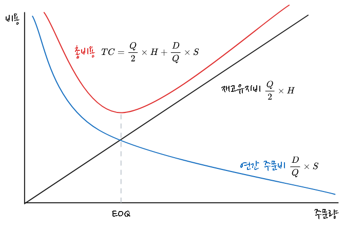

flowchart TB 자재관리 --- 1[구매관리] & 재고관리 1 --- 구매관리 & 외주관리 & 협력사관리 재고관리 --- 소요관리 & 저장관리 & 분배관리
물류관리(자재 및 재고관리)
재고관리
재고란 조직에서 판매를 목적으로 보관중인 물품이나 자원으로, 많이 보유하면 빠르게 시장에 대응할 수 있고 재고주문비용이나 생산준비비용이 절감되지만, 재고 저장 비용이나 이자비용, 기회비용이 증가하는 문제점이 발생한다.
재고관리는 기업에서 재고 수준을 어떻게 유지할 것인지, 언제 보충할 것인지(주문시점/생산시점), 주문량을 얼마로 할 것인지(1회 주문량/생산량) 등을 결정하여 비용을 최소화하면서 고객 서비스 수준을 향상시키는 활동이다.
재고 종류
재고는 사용 목적에 따라 다음과 같이 분류된다.
- 안전재고(Safety Inventory)
-
- 완충재고라고도 하며, 고객 서비스 차질과 부품 부족으로 인한 기회비용을 예방하기 위하여 비축하는 재고
- 제품수요, 리드타임, 부품공급 등 불확실성에 대처하기 위한 것
- 수요예측을 개선하며, 구매 또는 생산할 품목 리드타임을 줄여서 그 기간 동안 수요 불확실성을 감소
- 공급 불확실성 감소
- 생산계획을 부품납품업체들에게 알려 주면 예측이 정확해져 공급 신뢰도 향상
- 예상재고(Anticipation stock)
-
- 계절재고라고도 하며, 사업상 직면하게 되는 불규칙한 수요와 공급에 대응하기 위한 재고
- 수요 절정기에 생산수준을 많이 높이지 않기 위하여 수요가 적은 기간 동안 재고를 비축하거나 부품 납품 업체가 파악이나 생산능력 제한 때문에 위협을 받을 경우 비축한 재고
- 수요율과 산출률을 일치시키는 것, 그러나 수요 변동이 심하면 생산을 조절하기 어려우므로 수요를 평준화 하는 것이 바람직
- 수요 평준화 방안으로, 비수기에 가격을 인하하고 비수기에 판매 촉진을 강화하며, 기존 제품과 수요 사이클이 정반대가 되는 신제품을 제품 라인에 추가하는 방법
- 수송재고
-
- 물품 대금은 지급하였으나 아직 입고되지 않은 상태, 즉 수송 중인 상태인 재고
- 주기재고(Cycle Inventory)
-
- 연간 주문횟수를 줄여서 비용을 절감하려면 일회 주문량이 늘어나는데, 이로 인해 발생하는 재고
- 주문을 얼마나 자주 하고 한 번에 얼마나 할 것인가를 결정하는 것을 크기 결정이라 함
- 외주 또는 생산 로트 사이즈(발주량 Q)를 줄이면 주기재고를 줄일 수 있다. 로트사이즈를 소형화하면 그에 반비례하여 발주(작업준비) 횟수가 많아지므로 발주비(작업준비비)가 증대함
- 소로트화를 위해서는 먼저 발주(작업준비) 과정을 개선하여 발주와 작업준비에 소비되는 시간과 비용을 최소화해야 함
재고 비용
재고 보유 시 다음과 같은 관련 비용이 발생한다.
- 재고유지비(inventory holding cost)
-
- 재고를 보유함으로써 발생하는 비용으로, 자본비용, 저장비, 냉동비 등이 해당한다.
- 재고주문비(ordering cost)
-
- 재고 보충이나 신규로 주문할 때 소요되는 비용으로, 재고입고 비용, 검사 비용 등이 해당한다(고정비 성격).
- 생산준비비
-
- 재고를 자체적으로 제작할 경우 제조하기 위해 생산 라인을 준비하는데 소요되는 비용으로, 설비 및 장치 변경 비용, 유휴시간 비용 등이 해당한다(고정비 성격).
- 재고부족비(inventory shortage cost)
-
- 재고가 부족하여 고객 주문에 대응하지 못할 때 발생하는 비용으로, 품절비용(stockout cost, 기회비용), 추후납품비용(제품인도 지연에 따른 벌과금, 생산독촉비용, 신용 상신, 신뢰도 하락 등)이 해당한다(주관적 평가).
재고 수준 적정성 평가
재고 수준 적정성 평가, 즉 성과 척도 방법은 다음과 같다.
- 평균총재고가치
-
- 보유하고 있는 모든 재고 단가와 수량을 곱하여 재고 가치를 합한 것으로, 시계열 분석이나 경쟁사 대비 분석을 사용한다.
- 공급일수/공급주수
-
- 현재 보유하고 있는 재고가 언제 매출이 되는지 계산한 값으로 재고재산 회전일수/회전주수이다(기업이 보유한 평균 재고량과 판매수준 비율).
- \(공급일수 = \frac{평균총재고}{연간매출원가 (또는 연간매출액)} \times 기간\)
- 재고자산회전율
-
- 매출원가를 평균재고자산으로 나눈 것으로 재고잔산 회전속도를 나타낸다.
- \(재고회전율 = \frac{매출비용}{평균재고 \times 단위당 원가}\)
- 서비스 수준(%)
-
- 고객수요를 충족시키는 목적이 엉ㄹ마나 잘 달성되었는지를 측정하는 척도
수요 종류
수요는 크게 독립수요와 종속수요로 구분된다.
- 독립수요
-
- 완제품이나 예비부품/서비스부품에 대한 수요와 같이 다른 품목 수요에 의존하지 않고 기업 외부 시장 조건에 따라 결정되는 수요 형태
- 시계열 패턴을 가지고 지속적으로 발생, 수요 예측 필요
- 재고관리에 있어 보충(replenishment) 개념이 사용되고, 재고가 줄게 되면 수요 대비를 위해 재고를 보충
- 종속수요
-
- 최종제품 생산에 소요되는 각종 원자재, 부분품, 구성품 등과 같이 모품목 수요에 따라 종속되어 있는 품목 수요 형태
- 독립수요품목 생산계획에 따라 결정
- 자전거(독립수요) 생산 시, 핸들, 프레임, 바퀴, 타이어 등이 종속수요가 됨
- 재고관리에 있어 소요(requirement) 개념이 사용되고 원자재나 부분품이 쓰이는 상위단계 품목 또는 최종품목 필요에 따라 주문
- 종속수요품목 재고 관리 시스템, MRP 시스템
재고관리 모형
재고관리 모형은 수용 특성에 따라 확정적 재고관리 모형과 확률적 재고관리 모형으로 나눌 수 있다. 또한 특수한 경우 사용할 수 있는 단일기간 재고관리 모형이나 ABC 재고관리 모형도 있다.
flowchart LR 0[재고모형] 11[확정적 모형] 12[확률적 모형] 13[기타 재고 모형] 21[고정주문량 모형] 22[고정주문기간 모형] 23[조건부 재고 보충 시스템] 24[단일기간 재고관리 모형] 25[ABC 모형] 26["투빈시스템<br>원빈시스템<br>기본 재고 시스템"] 31[EOQ 모형] 32[EPQ 모형] subgraph s4[특수한 경우] 23 24 25 26 end subgraph s1[수요 및 조달 기간 특성] 11 12 13 end subgraph s2[주문시기 및 주문량 결정 방법] 21 22 end subgraph s3[고정주문량] 31 32 end 0 --> 11 & 12 & 13 11 & 12 --> 21 & 22 13 --> 23 & 24 & 25 & 26 21 --> 31 & 32
확정적 재고관리 모형
확정적 재고관리 모형은 재고관련 비용, 수요율, 생산율이 확정적인 경우에 사용하는 관리 모형이다.
- 특징
-
- 재고관련 비용, 수요율, 생산율이 확정적
- 가정
-
- 수요는 미리 알려져 있고, 일정하며, 균일하게 발생한다.
- 조달기간은 알려져 있고 일정하다.
- 제품 구입단가는 일정하다.
- 주문비용 또는 준비비용은 고정비로서 일정하다.
- 주문량은 조달기간이 지나면 일시에 전량이 한번에 들어온다.
- 모든 수요는 재고부족 없이 충족된다.
- 주요 용어 설명
-
기호 및 설명
기호 설명 TC 연간 재고관련 총 비용 D 연간 수요량 Q 1회 주문량 EOQ 또는 Q* 경제적 주문량 (최적 주문량) C 단위당 구입가격(생산인 경우 생산 비용) S 1회 주문비용 또는 준비비용 H 연간 단위당 재고유지비용, 1단위를 1년간 재고로 유지하는데 소요되는 비용, 보통 단위당 가입가격의 몇 %로 산정, H = C x 몇 % d 일일 평균 수요 L 조달 기간 R 재주문점 N* 연가 최적 주문 횟수 T* 연간 최적 주문 주기 P 연간생산율
경제적 주문량 모형(EOQ)
주문량에 따른 특징은 다음과 같다.
| 주문량이.적을.경우 | 주문량이.많을.경우 |
|---|---|
| 평균재고 감소 | 평균재고 증가 |
| 재고 유지비용 감소 | 재고유지비용 감소 |
| 연간 주문횟수 증가 | 연간 주문 횟수 감소 |
| 연간 주문비용 증가 | 연간 주문비용 감소 |
이상적인 주문량, 즉 최적주문량은 주문비용과 재고유지비용이 적정한 수준에서 결정된 수량이다.
경제적 주문량(EOQ,economic order quantity) 모형이란 가장 단순한 형태를 갖는 재고 모형으로 연간 재고유지비용과 연간 주문비용의 합을 최소화하는 1회 주문량(EOQ 또는 Q*)을 구하는 것으로 이 때 주문량 크기를 경제적 로트 사이즈(ELS, economic lot size)라고도 한다.

| 항목 | 계산식 |
|---|---|
| 연간 재고관련 총 비용 TC (연간 주문비용 + 연간 재고 유지비용) |
\[ \frac{D}{Q}S + \frac{Q}{2}H = \sqrt{2DSH} \] |
| 경제적 주문량(Q*) | \[ \sqrt\frac{2DS}{H} \] |
| 일일평균수요(d) | \[ \frac{D}{연간영업일수} \] |
| 재주문점(R) | \[ dL\] |
| 연간 최적주문횟수(N*) | \[ \frac{D}{Q^*} = \sqrt{\frac{DH}{2S}} \] |
| 연간 최적주문주기(T*) | \[ \frac{1}{N^*} = \sqrt{\frac{2S}{DH}}\] |
- 모형이 성립하기 위한 전제조건
-
- 수요가 일정하고 예측 가능하다: 수요는 일정한 속도로 지속적으로 발생하며, 예측 가능한 형태로 변화한다.
- 주문 시 비용은 일정하다: 각 주문에 대해 발생하는 고정적인 비용이 존재하며, 주문당 비용은 일정하다.
- 재고 유지 비용이 일정하다: 재고를 보유하는 동안 발생하는 비용(저장비용 등)은 일정하며, 보유 재고의 양에 비례한다.
- 주문 리드 타임이 일정하다: 주문을 하고 실제로 물품이 도착하는데 걸리는 시간이 일정하다.
- 주문은 한 번에 이루어진다: 주문은 한 번에 이루어지며, 연속적인 소규모 주문이 아니라 한 번의 주문으로 전체 수요를 충족시킬 수 있다.
- 재고가 소진되기 전에 항상 새로운 주문이 이루어진다: 주문이 이루어질 때 재고가 충분히 남아 있도록 계획되며, 재고가 부족하지 않게 주문이 이루어진다.
경제적 생산량 모형(EPQ)
경제적 생산량(EPQ, economic production quantity) 모형이란 생산이 진행되는 동안 생산된 제품이 재고에 더해짐과 동시에 소비가 일어나서 재고가 감소하는 경우 최적 1회 생산량을 결정하는 모형이다. 자체 생산, 조달하는 물품의 총 재고비용이 최소가 되는 1회당 경제적 생산량으로 기본 EOQ와 유사하지만 주문비용 대신 작업 준비 비용을 대체하여 사용하다는 점이 다르다.
EPQ 모델 가정
| 항목 | 계산식 |
|---|---|
| 생산기간(t) | \[\frac{Q}{P}\] |
| 평균재고수준 | \[\frac{(P-D)Q}{2P}\] |
| 연간재고유지비용 | \[\frac{(P-D)QH}{2P} = \frac{DS}{Q}\] |
| 연간생산준비비용 | \[\frac{D}{Q}S\] |
| 연간총비용(TC) | \[\frac{DS}{Q} + \frac{(P-D)QH}{2P}\] |
| 경제적 생산량(EPQ) | \[\sqrt{\frac{2DS}{H}(\frac{P}{P-D})}\] |
확률적 재고모형
조건부 재고 보충 시스템
조건부 재고 보충 시스템은 절충 시스템, min-max 시스템 등으로 불리며 고정주문량 모형과 고정주문기간 모형을 혼합해서 사용하는 방식이다.
ABC 모형
ABC 재고관리방식은 다수 경미한 품목보다는 소수 중요품목을 중심으로 재고를 관리하는 방식이다. 중요도 구분은 파레토 분석에 따른다. 재고품목 중요도는 품목 연간 사용액을 기준으로 결정된다. 연간 사용액은 품목 단가에 연간 사용수량을 곱하여 계산한다. 연간 사용액 크기에 따라 A, B, C 세 등급으로 분류하지만, 부패하기 쉬운 품목이나 리드타임이 긴 품목등도 A 품목으로 지정할 수 있다. ABC 품목 구성비는 회사 상황에 따라 차이가 있으며 대체로 다음과 같은 범위 내에서 이루어진다.
| 등급 | 품목비율 | 가치비율 | 관리정도 | 로트규모 | 주문주기 | 안전재고 | 통제 |
|---|---|---|---|---|---|---|---|
| A | 10~20% | 70~80% | 정밀 | 소량 | 짧게 | 소량 | P시스템 |
| B | 20~40$ | 15~20% | 정상 | 중량 | 중간 | 중량 | Q시스템 |
| C | 40~60% | 5~10% | 대강 | 대량 | 길게 | 대량 | Two-bin 시스템 |
- A등급 품목
-
- 재고수준을 계속적으로 파악하여 기록 정확성을 기한다.
- 발주간격을 짧게 하고 로트사이즈를 작게 한다.
- 수요, 리드타임, 관리 비용 등 주요 특성 변동 여부를 자주 점검하고 발주량, 발주간격, 안전 재고 등 수시로 조절한다.
- 모형을 통해 의사결정 한다.
- B등급 품목
-
- 발주간격을 다소 길게 한다.
- 안전재고 소량을 보유한다.
- C등급 품목
-
- 단순하고 값싼 관리방식을 사용한다.
투빈 시스템
정량발주방식과 정기발주방식
정기발주방식과 정량발주방식의 발주 시점에 따라 구분된다.
| 구분 | 정량발주시스템 | 정기발주시스템 |
|---|---|---|
| 개요 | 재고가 발주점에 이르면 정량을 발주 | 정기적으로 부정량을 발주 |
| 발주시기 | 부정기 | 정기 |
| 발주량 | 정량(경제적 발주량) | 부정량(최대 재고량 - 현재고) |
| 재고조사방식 | 계속 실사 | 정기 실사 |
| 안전재고 | 조달기간 중 수요변화 대비량 | 조달기간 및 발주주기 중 수요변화 대비량 |
VMI
Vendor Managed Inventory (VMI)는 공급업체가 고객 재고 수준을 관리하는 시스템이다. 전통적인 재고 관리에서는 고객이 자신 재고를 모니터링하고 필요할 때 공급업체에 주문을 넣는 방식이지만, VMI에서는 공급업체가 고객 재고 현황을 실시간으로 파악하고 재고가 부족할 때 자동으로 발주하여 필요한 상품을 공급하는 방식이다.
- VMI의 주요 특징
-
- 재고 관리의 자동화: 공급업체가 고객의 재고 수준을 직접 모니터링하고 재고가 부족할 경우 발주를 자동으로 처리한다. 고객은 재고 수준을 관리할 필요 없이 공급업체가 이를 대신한다.
- 실시간 데이터 공유: VMI 시스템에서는 고객과 공급업체가 실시간으로 데이터를 공유한다. 고객의 재고 데이터, 판매 데이터 등이 공급업체에 전달되어 재고 수준과 수요를 예측하고 최적화된 발주를 한다.
- 수요 예측 및 최적화: 공급업체는 고객의 판매 패턴과 재고 수준을 분석하여 적절한 시점에 적절한 수량의 상품을 공급할 수 있다. 이를 통해 재고 부족이나 과잉을 방지하고 효율적인 재고 관리를 한다.
- 협력적인 관계: VMI는 공급업체와 고객 간의 긴밀한 협력을 기반으로 한다. 공급업체는 고객의 재고를 관리하면서 고객의 필요에 맞춰 공급 일정을 조정하고, 고객은 더 이상 재고 관리에 신경 쓸 필요 없이 원활한 공급을 받을 수 있다.
VMI 장점과 단점은 다음과 같다.
| 장점 | 단점 |
|---|---|
| 재고 관리 효율성 향상: 재고 수준을 최적화하여 과잉 재고나 재고 부족을 방지할 수 있다. | 정보 공유의 위험: 고객의 재고 데이터와 판매 데이터를 공급업체와 공유해야 하므로 보안에 대한 우려가 있을 수 있다. |
| 운영 비용 절감: 주문 및 재고 관리가 자동화되어 인건비나 물류 비용을 줄일 수 있다. | 초기 설정 비용: VMI 시스템 도입을 위한 초기 비용이 발생할 수 있으며 시스템 통합에 시간이 필요할 수 있다. |
| 공급망 개선: 공급업체와 고객 간의 신뢰와 협력이 강화되어 공급망 효율성이 향상된다. | 의존성: 공급업체에 의존하는 시스템이기 때문에, 공급업체의 관리 능력이 부족하면 문제가 발생할 수 있다. |
| 빠른 재고 회전율: 재고 수준을 정확히 예측하고 관리할 수 있어 빠른 재고 회전율을 유지할 수 있다. |
- VMI의 적용 분야
-
- VMI는 제조업체, 유통업체, 소매업체 등 다양한 산업에서 활용된다. 예를 들어, 대형 슈퍼마켓이나 전자상거래 플랫폼에서는 재고 관리를 효율적으로 하기 위해 VMI를 많이 사용한다.
- VMI 시스템은 고객과 공급업체 모두에게 이점을 제공하며, 재고 관리의 효율성을 높이고 공급망을 최적화하는 데 중요한 역할을 한다.
재고 비용 및 재고 성과 척도
flowchart TB 00[재고관련비용] 01["주문비용<br>Procurement costs"] 02["재고유지비용<br>Inventory carrying costs"] 03["품절비용<br>Out-of-stock costs"] 00 --- 01 & 02 & 03
\[ 총 \ 재고비 = 재고비용 \ 합 = 주문/구매 \ 준비 \ 비용 + 재고 \ 유지 \ 비용 + 품절 \ 비용(재고 \ 부족비) \]
재고관련 비용은 일반적으로 제품 가치 15~35% 발생한다(이자, 보관비용, 세금, 보험료, 상품 훼손 비용 등).
- 주문/준비 비용 (order/setup cost)
-
- 주문비용이란 창고에 입하를 위한 주문 행위를 할 때 발생하는 비용
- 주문 또는 준비 횟수에 비례하지만, 주문 크기에는 전혀 관계가 없다고 가정
- 재고 유지 비용 (holding cost)
-
- 재고 유지비란 일정 수준 재고품을 보유하고유지할 경우 발생하는 비용
- 재고 유지비는 재고량 변화에 따라서 직접적으로 비례하여 변화하므로 변동비로 취급
- 품절비용 (stock out cost)
-
- 외적 및 내적 재고 부족
- 재고 부족(품절)으로 발생되는 비용으로 판매기회나 고객 상실인 기회 상실 비용
재고 척도
공급사슬 첫오가 척도, 재고 측정을 위한 기본 형태로 다음 4가지가 있다.
- 평균 총 재고액(Average aggregate inventory value)
- 재고 회전율
- 재고 공급 주수
- 재고 공급일수(Day of supply)
- 평균 총 재고액
-
- 현재 재고로 보유하고 있는 품목 가치 합, 재고 총 평균 가액
- 기업이 어떤 기간 동안 재고로 보유하고 있는 모든 품목(원자재, 재공품, 완제품 등) 총 평균 가치(원가 기준)
- 평균 총괄 재고가치는 기업이 얼마나 많은 자산이 재고에 묶여 있는가를 나타내는 지표
- 총 자산 대비 평균적으로 제조업은 25%, 유통업체는 75% 수준
\[ 평균총재고액 = \frac{기초재고액 + 기말재고액}{2} \]
- 재고 공급일수
-
- 현재 보관 중인 재고를 이용할 경우 기대 판매 가능일 수(현재 재고로 며칠을 공급할 수 있는가)
\[ 재고 \ 공급일수 = \frac{평균재고가액}{일당매출원가} \]
- 재고 공급주수
-
- 평균 총괄 재고 가치를 주당 매출원가로 나눈 값
\[ 재고 \ 공급주수 = \frac{평균재고가액}{주당매출원가} \]
- 재고 회전율
-
- 연간 매출원가를 연간 평균 총재고액으로 나눈 재고 측정치
- 회전율은 일정한 기간을 전제로 하고그 사이에 판매 활동이 어떻게 공헌했는지 측정하는 지표로 회전율이 높은수록 좋음
\[ 회전율 = \frac{(연간)매출액(원가)}{(평균)재고액} \]
유닛로드
유닛로드 시스템(unit load system)이란 낱개단위 화물을 일정 규모의 단위화물로 만들어 일관된 수송/보관/하역 체계를 구축하여 합리적 물류 활동을 가능하게 하는 시스템으로, 파텟트(pallet), 컨테이너(container) 이용을 통한 수송 및 보관, 지게차에 의한 상하차 등을 예로 들 수 있다.
- 유닛로드 시스템 전제조건
-
- 파렛트 표준화
- 포장단위 치수 표준화
- 수송장비 적재함 규격 표준화
- 운반 하역장비 표준화
- 창고, 보관시설 표준화
- 거래단위 표준화
유닛로드 시스템 장단점은 다음과 같다.
- 장점
-
- 제품 파손 및 분실 방지
- 포장 간소화 및 포장비 절감
- 시스템화 용이
- 운송수단 효율성 제고
- 적재효율성 제고
- 인건비 절감
- 하역 효율 항상
- 단점
-
- 장비 확보 필요
- 검품/이송 등 부수작업 발생
- 넓은 공간 확보 필요
- 고정시설 투자 필요
- 자재관리 시간 및 비용 추가
활성지수
활성지수는 물건이 놓여 있는 상태로부터 이동에 시키기 위한 수고 정도(0~4)를 합계치인 4에서 뺀 값을 나타낸다. 즉, 활동지수가 높을수록 물건을 쉽게 이동할 수 있다는 의미이다.
- 활성지수 0
-
- 바닥에 벌크 상태로 놓여 있을 때
- 활성지수 1
-
- 용기에 넣거나 다발로 묶었을 때
- 활성지수 2
-
- 팔레트, 스키트 등 받침을 사용했을 때
- 활성지수 3
-
- 차량을 사용했을 때
- 활성지수 4
-
- 컨베이어, 슈트 등을 사용했을 때
오더피킹
오더피킹(Order picking)은 고객 주문을 처리하기 위해 물류창고 또는 보관 시설에서 품목을 선택하고 모으는 과정을 뜻한다. 오더피킹에는 품목 유형, 수량 및 특정한 고객 요구사항과 같은 주문 세부 정보를 기반으로 각 위치에서 지정된 제품을 출고하는 작업이 포함된다.
일반적으로 물류센터 내 물류활동 비중 중 오더피킹에 소요되는 비용은 55%로 보관이 차지하는 비중인 15%를 함치면 전체 비용 대비 70%를 차지한다.
제품 손상을 최소화하고 처리 시간 단축 및 피킹 정확도 향상을 위해 아래와 같은 원칙을 검토해야 한다.
- 오더피킹 생상선 향상을 위한 원칙
-
- 가능한 작업 종류 축소
- 피킹 빈도가높은 품목일수록 피커접근이 용이한 장소에 저장
- 혼잡을 피하기 위해 피킹 장소 간 피킹 활동 조절
- 같이 주문될 가능성이 높아 보통 함께 피킹하는 경우가 많은 물품은 동일 또는 인접한 장소에 배치
- 피킹 지역을 forward picking area와 reserve picking area로 구분할 것
- 총 이동시간을 줄이기 위해 고객 주문을 일괄 처리할 것
- 이동 시ㅏㄱㄴ을 줄이기 위해 피킹 장소 간 피킹 순서를 결정
- 찾기 시간 오류를 최소화할 수 있도록 피킹 문서와 피킹 장소 표시를 체계화할 것
- 분류 시간 오류를 최소화하고 작업자 편의성을 최대화할 수 있는 운반 기기를 설계할 것
- 자사 환경 요건에 맞추어 최적 오더 피킹 설비를 설택할 것
오더피킹 종류는 다음과 같다.
- 일괄패킹(Batch picking)
-
- 2단계 피킹 또는 다단계 피킹이라고도 하며 동시에 여러주문에서 여러 품목을 피킹하는 것을 의미
- 클러스터 피킹(Cluster picking)
-
- 일괄 피킹과 유사하게 작업을 하지만 주문이 한 영역에서 여러 SKU로 피킹되는 경우를 의미
- 개별 오더 피킹(Dscrete order picking)
-
- 주문을 피킹하는 가장 일반적인 방법으로 주문이 완료될 때까지 항목별로 주문을 단순하게 피킹하는 것을 의미
- 웨이브 피킹(Wave picking)
-
- 일괄피킹과 유사하며 주문이 여러 교대 시간과 직원에 걸쳐 피킹되는 형태를 의미
- 존 피킹(Zone picking)
-
- 풀필먼트 센터를 별도 영역 또는 구역으로 나누고 직원은 교대 근무하는 동안 한 구역에서 근무하고 해당 구역 내에서 피킹하도록 지정
- 주문에서 여러 구역 SKU가 필요한 경우 SKU는 한 구역에서 피킹되어 다른 구역으로이동해서 주문을 처리(순차구역피킹 또는 픽 앤 패스 피킹)
크로스 도킹
월마트의 크로스 도킹(Cross docking)은 물류 효율성을 극대화하기 위한 재고 관리 및 배송 전략이다. 이 시스템은 제품이 창고에 도착한 후, 별도 보관 없이 바로 다른 차량으로 이동시켜 배송하는 방식이다. 즉, 창고에서 보관하거나 재고를 유지하는 대신, 물류 센터에서 빠르게 물품을 선별하고, 이를 고객에게 전달할 수 있도록 한다.
- 크로스 도킹의 과정
-
- 입고: 공급업체에서 제품을 물류 센터로 운송하다.
- 선별: 물류 센터에서 도착한 제품을 목적지별로 분류하다.
- 출고: 분류된 제품을 즉시 배송 차량에 실어 목적지로 출발하다.
크로스 도킹 장점과 단점은 다음과 같다.
| 장점 | 단점 |
|---|---|
| 재고 보관 비용을 절감하다. | 물류 센터에서 빠른 작업이 필요하여 운영이 복잡해질 수 있다. |
| 상품 회전율을 높여 재고 관리 효율성을 증대하다. | 공급망의 예기치 못한 지연이 전체 시스템에 영향을 미칠 수 있다. |
| 배송 시간을 단축시켜 고객 만족도를 높이다. | 시스템 구현을 위한 초기 투자 비용이 많이 들다. |
| 물류 효율성이 향상되어 운송비 절감 효과를 가져오다. | 모든 제품에 적용이 어려운 경우가 있을 수 있다. |
전용 용기 설계
자재 출고에 필요한 전용 용기 설계 시 고려해야 할 원칙은 효율적인 물류와 안전한 운반을 위해 중요하다. 전용 용기는 자재의 보호와 최적화된 운송을 도와야 하므로, 설계 시 여러 가지 요소를 신중히 고려해야 한다.
- 자재 출고 전용 용기 설계 시 고려해야 할 원칙
-
- 적재 효율성: 용기는 가능한 한 많은 자재를 안전하고 효율적으로 적재할 수 있도록 설계해야 한다. 공간을 최대한 활용하는 구조로 설계하여 물류 비용을 절감할 수 있다.
- 안전성: 자재가 손상되지 않도록 보호하는 기능이 중요하다. 용기는 자재의 형태와 크기에 맞게 설계하여 이동 중의 충격이나 파손을 방지해야 한다. 또한 용기의 외부가 날카롭지 않도록 디자인해야 한다.
- 표준화: 용기의 크기와 형태는 표준화하여, 다양한 자재와 환경에서 사용될 수 있도록 해야 한다. 표준화된 용기는 관리와 운송이 용이하고, 다양한 시스템과 호환되기 때문에 효율성이 증가한다.
- 재질 선택: 자재의 성질에 맞는 재질을 선택해야 한다. 예를 들어, 부식에 강한 재료, 가벼운 재료, 또는 내구성이 높은 재료를 사용하는 것이 중요하다. 재질은 자재 보호뿐만 아니라 환경적인 요소도 고려하여 선택해야 한다.
- 추적 가능성: 용기는 바코드, RFID 태그 등을 부착할 수 있도록 설계하여 자재의 출고 및 이동 상황을 실시간으로 추적할 수 있어야 한다. 이를 통해 재고 관리와 물류 시스템을 최적화할 수 있다.
- 적합성: 용기는 자재의 특성에 맞게 설계해야 한다. 예를 들어, 액체나 기체, 민감한 전자 제품 등은 특별한 보호 장치가 필요하다. 자재의 특성에 맞는 형태와 보호 기능을 갖춘 용기가 필요하다.
- 경제성: 용기의 제작 및 운영 비용이 지나치게 높지 않도록 설계해야 한다. 경제적인 재료와 생산 방법을 선택하면서도 기능성을 충족하는 용기를 설계해야 한다.
- 다용도성: 다양한 자재에 활용할 수 있도록 다목적으로 사용할 수 있는 용기로 설계하는 것이 좋다. 여러 용도로 활용될 수 있으면 자원의 낭비를 줄일 수 있다.
전용 용기에 대한 장점과 단점은 다음과 같다.
| 장점 | 단점 |
|---|---|
| 자재 보호 기능이 향상되어 손상 위험이 줄어든다. | 특정 자재에 특화된 용기는 다른 자재에는 적합하지 않을 수 있다. |
| 물류 효율성이 높아져 적재 공간과 운송 비용을 절감할 수 있다. | 초기 설계 및 개발 비용이 상승할 수 있다. |
| 관리와 추적이 용이하여 재고 관리에 도움을 준다. | 재질이나 디자인 선택에서 신중함이 필요해 선택이 어려울 수 있다. |
| 표준화된 용기는 다양한 시스템과 호환되어 유연하게 운용할 수 있다. | 다용도성을 고려한 설계가 복잡해질 수 있다. |
전용 용기는 효율적인 물류와 안전한 운반에 도움을 준다. 설계 시 개발 비용이 상승할 수 있고 다용도성을 고려해야 하는 한계도 있다.
철도 물류
TOFC
TOFC (Trailer on Flat Car) 방식은 철도 운송에서 사용되는 방식으로, 트레일러를 평차에 실어 운반하는 방법을 의미한다. 이 방식은 주로 트럭 운송과 철도 운송을 결합하여 물류 효율성을 극대화하는 데 사용된다. TOFC 방식의 핵심은 트레일러가 철도에 실려 이동하는 것이다.
- TOFC 방식 특징
-
- 트레일러 운반: 일반적으로 트레일러는 기존 트럭에서 하역하여 철도에 실어 운송한다. 이때 트레일러는 차체와 바퀴가 그대로 유지되며, 평차(Flat Car)에 실려 이동하게 된다.
- 상호 운송 시스템: 트레일러는 철도 운송과 도로 운송이 결합된 형태로, 철도를 이용해 장거리 운송을 진행하고, 철도 역에서 다시 트럭으로 하역하여 목적지까지 배송된다. 즉, “트레일러”와 “철도” 간 결합을 통해 효율적인 운송이 가능하다.
- 효율성: TOFC 방식은 도로와 철도를 결합하여 각각 장점을 극대화한다. 철도를 이용해 대규모 화물을 빠르고 비용 효율적으로 운반하고, 도로 운송으로 유연하게 최종 목적지까지 운반할 수 있다.
- 주요 활용: TOFC 방식은 주로 화물 운송, 특히 대형 화물이나 중량 화물 운송에 사용된다. 이 방식은 물류 비용 절감, 운송 시간 단축 및 효율적인 물류 처리가 필요한 경우에 유리하다.
TOFC는 컨테이너화된 화물과 트레일러를 쉽게 철도로 운송할 수 있어, 다양한 산업에서 중요한 물류 운송 수단으로 사용된다.
COFC
COFC (Container on Flat Car) 방식은 철도 운송에서 컨테이너를 평차(Flat Car)에 실어 운반하는 방법을 의미한다. TOFC와 비슷한 개념으로, COFC는 컨테이너를 철도로 운송하는 방식으로, 철도와 도로 운송의 결합을 통해 효율적인 물류 운송을 가능하게 한다.
- COFC 방식 특징
-
- 컨테이너 운반: COFC에서는 표준화된 컨테이너(20피트, 40피트 등)를 평차에 실어 철도 운송을 진행한다. 이 컨테이너는 일반적으로 도로 운송에서 사용되는 트럭이나 다른 운송 수단으로도 쉽게 옮길 수 있도록 설계되어 있다.
- 철도-도로 통합 시스템: COFC는 철도와 도로 간의 원활한 연결을 통해 물류 효율성을 극대화한다. 컨테이너는 철도에서 장거리 운송을 마친 후, 철도역에서 트럭으로 하역되어 최종 목적지까지 운반된다. 이 방식은 복합 운송이라고도 불린다.
- 효율성: COFC 방식은 철도를 이용한 대량 운송이 가능하고, 컨테이너가 다양한 운송수단에서 호환 가능하므로 시간과 비용을 절감할 수 있다. 또한, 다양한 종류의 화물과 컨테이너를 표준화된 방식으로 운반할 수 있어 물류 효율성이 매우 높다.
- 주요 활용: COFC는 국제 물류 및 대량 화물 운송에서 주로 사용된다. 컨테이너를 철도와 도로를 통해 동시에 운송할 수 있어, 항만과 물류 창고 간의 원활한 운송을 돕는다. 특히, 대륙 간 물류 네트워크에서 중요한 역할을 한다.
COFC는 해상 운송, 철도 운송, 도로 운송 간의 효율적인 연결을 통해, 다양한 산업에서 중요한 물류 시스템으로 자리 잡고 있다.
| 항목 | TOFC (Trailer on Flat Car) | COFC (Container on Flat Car) |
|---|---|---|
| 운반 대상 | 트레일러 (트럭에 장착된 상태로 운반) | 컨테이너 (표준화된 크기의 컨테이너) |
| 화물 형태 | 트레일러 (트럭에서 사용하는 바퀴와 차체 유지) | 컨테이너 (해상 및 도로 운송에 사용되는 표준 컨테이너) |
| 운송 방식 | 도로와 철도의 결합 (트레일러는 철도로, 트럭은 도로) | 해상, 도로, 철도의 복합 운송 |
| 적용 분야 | 주로 국내 물류, 장거리 육상 운송 | 주로 국제 물류, 해상 운송, 복합운송 시스템 |
| 유연성 | 트레일러는 특정 트럭에 맞춰져 있어 제한적 | 표준화된 컨테이너로 다양한 운송 수단에서 활용 가능 |
| 비용과 효율성 | 비용이 더 들 수 있지만 효율적 | 비용 효율적이며 다양한 운송 수단을 통합해 효율성 극대화 |
아웃소싱
아웃소싱(Outsourcing)은 기업이 자사의 일부 업무나 기능을 외부의 전문 업체에 위탁하여 수행하도록 하는 경영 전략이다. 이를 통해 기업은 특정 작업에 필요한 자원을 외부에서 공급받고, 핵심 역량에 집중할 수 있게 된다.
- 아웃소싱의 주요 목적
-
- 비용 절감: 자사에서 직접 처리할 때보다 외부 업체를 통해 비용을 절감할 수 있다. 외부 전문 업체는 특정 업무를 효율적으로 처리할 수 있기 때문에 비용 절감 효과를 기대할 수 있다.
- 핵심 역량 집중: 기업이 자신이 잘하는 일에 집중하고, 비핵심 업무는 아웃소싱하여 자원의 낭비를 줄이고 효율성을 높일 수 있다.
- 전문성 확보: 외부 업체는 특정 분야에 대한 전문성을 가지고 있어, 기업이 직접 하지 못하는 고도의 기술이나 서비스를 제공할 수 있다.
- 유연성 증가: 외부 업체와 계약을 통해 필요에 따라 자원을 추가하거나 축소할 수 있어, 기업 운영의 유연성을 증가시킬 수 있다.
- 아웃소싱의 종류
-
- 업무 아웃소싱 (Business Process Outsourcing, BPO): 인사, 회계, 고객 서비스 등과 같은 업무를 외부 업체에 위탁하는 형태이다. 예를 들어, 고객센터 운영을 외부 전문 업체에 맡기는 경우가 있다.
- IT 아웃소싱 (IT Outsourcing): 기업의 IT 관련 업무(서버 관리, 소프트웨어 개발 등)를 외부 전문 업체에 위탁하는 것이다. 예를 들어, 시스템 유지보수나 웹 개발 등을 아웃소싱할 수 있다.
- 제조 아웃소싱 (Manufacturing Outsourcing): 제품의 제조를 외부 제조업체에 맡기는 것이다. 예를 들어, 브랜드 회사가 생산을 외부 공장에 맡겨 생산 효율성을 높이는 방식이다.
- 아웃소싱의 장점
-
- 비용 절감: 외부 업체가 더 낮은 비용으로 업무를 처리할 수 있어 비용 절감 효과가 있다.
- 전문성 확보: 전문 업체가 제공하는 고도화된 서비스를 통해 품질을 높이고, 기업 내부 자원은 효율적으로 사용할 수 있다.
- 유연성: 시장 변화나 수요 변화에 따라 외부 업체와 계약을 통해 유연하게 대응할 수 있다.
- 핵심 역량 집중: 비핵심 업무를 아웃소싱하여 기업은 핵심 사업에 집중할 수 있다.
- 아웃소싱의 단점
-
- 품질 통제 어려움: 외부 업체에 의존하다 보니 품질 관리가 어려워질 수 있다. 기업이 직접 관리하지 않으면 품질 저하나 서비스의 일관성 부족 문제가 발생할 수 있다.
- 의사소통 문제: 외부 업체와의 의사소통에서 발생할 수 있는 문제나 오해가 업무에 영향을 미칠 수 있다.
- 보안 문제: 민감한 정보나 데이터를 외부 업체와 공유할 경우 보안 위협이 발생할 수 있다.
- 의존도 증가: 외부 업체에 대한 의존도가 커지면, 만약 외부 업체가 계약을 중단하거나 문제가 생기면 기업의 운영에 큰 영향을 미칠 수 있다.
- 아웃소싱의 예시
-
- 콜센터 운영: 고객 서비스나 기술 지원을 외부 업체에 맡기는 것이 일반적인 아웃소싱 예시이다.
- IT 시스템 유지보수: 기업이 서버 관리나 소프트웨어 업데이트를 외부 IT 업체에 위탁하는 경우도 있다.
- 제조 아웃소싱: 유명 브랜드가 제품 생산을 외부의 계약 제조업체에 맡기는 방식이다.
아웃소싱은 비용 절감, 전문성 확보, 유연성 증가 등 다양한 장점이 있지만, 품질 통제나 보안 문제 등 몇 가지 단점도 존재한다. 따라서 아웃소싱을 결정할 때는 외부 업체의 신뢰성과 품질을 충분히 고려하고, 계약을 체결할 때 세밀한 관리가 필요하다.